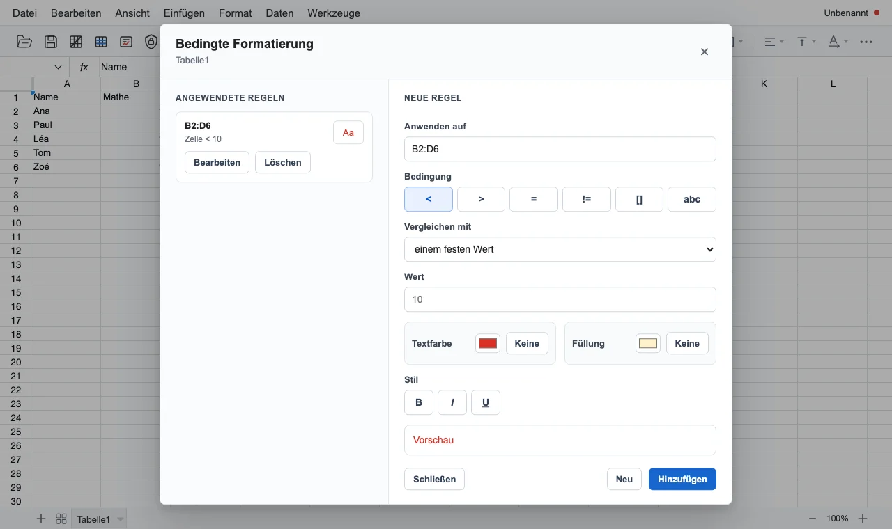

Bedingte Formatierung
Eine Regel ändert das Aussehen der Zellen eines Bereichs, die eine Bedingung erfüllen. Sie folgt den Werten, eingegeben oder berechnet.
Eine Regel erstellen
- Den Bereich ohne seine Kopfzeile auswählen.
- oder Format › Bedingte Formatierung.
- Die Bedingung, den Vergleichswert, die Farben oder den Stil wählen.
- Hinzufügen.

| Bedingung | Die Zelle |
|---|---|
< | ist kleiner als |
> | ist größer als |
= | ist gleich |
!= | ist ungleich |
[] | liegt zwischen zwei Werten, Grenzen eingeschlossen |
abc | enthält einen Text, Groß- und Kleinschreibung gleichgültig |
Womit vergleichen
| Vergleichen mit | Beispiel |
|---|---|
| einem festen Wert | die Noten unter 10 |
| einer festen Zelle | die Noten unter der in F1 geschriebenen Schwelle |
| einer Spalte in derselben Zeile | in Spalte C die Werte über denen der Spalte B, Zeile für Zeile |
Aussehen
Textfarbe und Füllung wählen die Farben, Keine entfernt sie; B, I, U setzen fett, kursiv, unterstrichen. Mindestens eine Farbe oder ein Stil ist nötig.
Mehrere Regeln
Die linke Spalte listet die Regeln des Blatts auf: Bearbeiten, Löschen. Gelten mehrere Regeln für eine Zelle, hat die letzte der Liste Vorrang, Farbe für Farbe.
In einem von einer Regel abgedeckten Bereich werden direkt vergebene Text- und Hintergrundfarben nicht mehr angezeigt.
Die Regeln werden in der Excel-Datei als bedingte Formatierungen von Excel gespeichert.